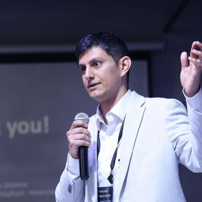

I'm Francisco Zenteno Smith, an operations research scientist with a decade of experience building decision-support software in the industry.

I can:
As a result of these efforts, I created SEFOP, a Software Engineering Framework for Optimization Programs.
A decision-support system (DSS) is a software that supports business or organizational decision-making activities. A DSS can help in operational, tactical, and strategic decisions. A DSS is typically executed at some frequency, such as daily, weekly, or monthly. Some examples problems that can be solved with a DSS include:
A DSS is not a one-off research project, but a system that needs to be developed, maintained, and improved with modern and professional engineering practices as any other software system to maximize its business value. Some of these practices include:
SEFOP (Software Engineering Framework for Optimization) gives engineering managers four foundations, tailored specifically for decision-support systems, to maximize the business value of their operations research teams: Teach the software-engineering practices these systems demand, Deliver professional software, Lead developers and scientists, and Go Agentic to benefit from agentic development.
Leading American's baggage-optimization portfolio, the full suite of optimization solutions across baggage operations.
Drove a 4x increase in the science team's delivery productivity by leading its adoption of agentic and software-engineering practices.
Led the year-long refactor of a legacy decision-support system, cutting technical debt 67% by teaching the team software-engineering principles.
Designed a framework that cut experimentation runtime 93% and raised optimization models' unit-test coverage to 95%.
Led and mentored a team of 3 data scientists across forecasting, operational efficiency, and workforce scheduling.
Built a simulated-annealing metaheuristic that shipped a monthly cashier-scheduling system to production for 350 stores, without commercial optimization software.
Designed a multi-objective staff-planning model reused across 20+ consultancies for enterprise clients.
Deployed new production features into a large-scale optimization model for enterprise clients across Latin America.